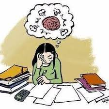

Antes de empezar a hablar sobre este tema, hay que diferenciar 3 términos muy importantes:
Algunas personas que visiteis la web puede que esteis pensando, ¿a que santo me intersa saber a mi estas definiciones? Puede que llegueis a pensarlo, puede que no, eso ya es cosa vuestra ;). Según la web de La mente es maravillosa categoriza el estrés con los dos primeros términos definidos anteriormente, diferenciándolos entre sí y justificando que la "mala fama" que tiene la palabra estrés es totalmente errónea, ya que, dentro de esa palabra, también existe una parte positiva.
Entonces, una de las preguntas más debatidas actualmente acerca de este campo, ¿el estrés es bueno o malo? - Para mí, la respuesta es depende. Digo depende porque, no es lo mismo padecer eustrés por la motivación que estás sintiendo en ese momento trabajando o estudiando que sentir distrés porque te sientes desbordado y no llegas a tus objetivos que tenías marcados.
El estrés es algo necesario en nuestras vidas, en el día a día, ya que forma parte del motor que nos impulsa para realizar nuestros cometidos. Ahora en la siguiente tabla, vamos a proporcionar unos pequeños "tips" proporcionados por la web La mente es maravillosa para poder gestionar de una forma más óptima el estrés:
| TIPS | Identificar el momento en el que comienza el estrés. El estrés puede manifestarse física y emocionalmente después de haberse mantenido dde forma latente. |
|---|---|
| Aplicar ténicas de respiración. Constituye un mecanismo para recuperar la serenidad. Se ha comprobado que las respiraciones lentas y rítmicas activan el nervio vago. Este modera las respuestas frente al estrés. Solo con adoptar una posición lo más cómoda posible y que comiences a respirar profundamente, debería de servir. | |
| Desviar la atención. Cuanto más fijes tu atención en aquellas fuentes de inquietud, más estresado te sentirás. Para ello, hay que esforzarse en desviar la atención y mirar algún objetivo que esté en tu entorno. Se intentará describir ese objeto detalladamente de forma mental y, dicho procedimiento, se repetirá de forma consecutiva con varios objetos más. La finalidad es regular tus impulsos y ampliar tu panorama emocional de inmediato para gestionar mejor el estrés. | |
| Mirar una imagen relajante.Las imágenes comunican sensaciones y las impregnan en los observadores. Por eso, cuando sientas mucho estrés, mirar esta clase de imágenes puede adyudarte mucho para que logres distensionarte. Es una forma de enfocar tu mente hacia algo agradable. | |
| Reinterpretar la experiencia. Este tip lo considero más complejo que los anteriores. La finalidad que tendría este tip es intentar conocer todo lo que le está ocurriendo a tu cuerpo y porque y, una vez te aproxiamas a sacar tus propias conclusiones, le otorgas una interpretación diferente para que la sensación de tensión en tu cuerpo se disipa paulatinamente. Parece fácil, pero no lo es...y, en ocasiones, uno no llega a saber o comprender porque le ocurre esto hasta que, llega a un punto, que necesita ayuda externa de un profesional de las conductas, es decir, un psicólogo, para que intervenga. | |
| Adoptar una postura física antiestrés. Se ha podido observar en varios estudios, que ponerte de pie, con la espalda muy recta y hacer muevas con la cara, te ayudará a disminuir el estrés. | |
| Hacer un ejercicio simple con las manos. Se ha podido comprobar que cerrar los puños de ambas manos con mucha fuerza y luego extenderlas es un ejercicio que ayuda a reducir el estrés. se trata de un gesto agresivo y por eso mismo contribuye a liberar tensiones en momentos de gran inquietud. |
Por supuesto, existen más técnicas y formas de liberar el estrés :p , pero, de momento, con estos tips os deberían servir. Si alguna vez sufrís una situación de estrés desbordante que afecta a todos los aspectos de tu vida, recomendación: pedir ayuda de un profesional.